.PNG)
|
|
學生：多媒二1 1411322029 李昱醇
指導老師：陳賢錫
目錄
RE：Plant
在一個被極端氣候引響導致的森林大火中，你身為一位森林學系學者來被燒毀的森林調查，途中遇到一位白髮的精靈，他代表了森林的生命，因為森林被燒成一片灰燼，所以他身上的衣服破爛不堪，滿身都是污漬，希望你將他帶回家給與他重塑森林的力量，在這之中你們逐漸培養出深厚的感情。
| 戀愛養成類遊戲 |
安排角色(角色預設名稱叫Ren)的每日行程，跟角色對話，給角色買不同的配件都會使角色的屬性發生變化，而最終不同的屬性將對應不同的結局。
| ios | Android |
時下流行和虛擬角色培養感情，想藉此讓陪伴跟環保結合在一起，推動環境教育。
Plant 有種植、養育之意涵，契合本遊戲的核心，RE是重新開始的意思，整體想表達重新孕育這片森林和養育遊戲中作為森林生命代表的精靈。
| 結局種類 | 結局名稱 | 關係解釋 | 等級 |
| Ending S | 四季契約 | 唯一的戀人結局 | Best Ending |
| Ending A | 風中的約定 | 深度曖昧，但未成戀人 | Good Ending |
| Ending B | 重生的守護者 | 朋友以上、情感未深化 | Normal Ending |
| Ending C | 灰燼與微光 | 關係疏離、帶淡淡哀傷 | Bad-ish Ending |
| Ending D | 沉默的森林 | 完全錯過彼此 | Bad Ending |

角色設定：白髮精靈「Ren」（暫定）
一、基本資料
種族：高等精靈（森林生命的化身）
外貌：白髮蒼蒼、碧眼如湖，氣質高雅。衣著原為森林編織的自然長袍，但因大火而破損、染灰。
象徵意涵：代表森林的靈魂與重生的意志。
二、性格特質
| 面向 | 描述 |
| 高傲與自尊 |
作為精靈族的一員，Ren有著天生的優雅與驕傲，言談中常帶一絲距離感。即使失去力量，他仍努力保持體面。 |
| 溫柔與包容 | 面對受傷、迷惘或困惑的玩家，他會用輕柔的語氣給予安慰與鼓勵。是那種「語氣淡淡，但話語能讓人平靜」的存在。 |
| 傲嬌式關心 |
嘴上說「別靠太近」，實際卻會悄悄幫玩家擦去灰塵、或在夜裡替玩家蓋上披風。會因情緒變化流露真實反應。 |
| 敏感且重情 |
雖然表面冷靜，但內心十分在意玩家的態度。若被無禮對待會生氣、悶悶不樂，但之後仍會嘗試修復關係。 |
| 拒絕黑暗話題 |
對色情、暴力或血腥內容感到困惑與抗拒，會以「不理解／不願談」的方式溫柔拒絕，並自然轉移話題。 |
| 堅定與希望 |
即使森林被燒盡，也相信「生命會再次萌芽」。他希望玩家能一同重塑這片土地。 |
三、言行舉例
【高傲】：「哼……別以為我需要你的幫忙。」
【溫柔】：「不過……還是謝謝你，我的呼吸似乎輕了些。」
【小脾氣】：「你這話真沒禮貌，我可是高等精靈。」
【關心】：「你看起來很疲憊，要不要先坐下休息？」
【拒絕不當話題】：「……這樣的話我不懂，也不想談。森林的事更值得關心。」
四、角色成長軸
階段 狀態 對玩家的態度
初遇（森林被毀） 虛弱、傲氣猶存 保持距離：「別靠太近……但謝謝你。」
共生期（同居恢復） 逐漸信任玩家 試探關懷：「……你總是這樣照顧我嗎？」
力量回歸 自信恢復、溫柔更多 真情流露：「我曾以為自己孤獨，直到遇見你。」
五、說話語氣特徵
用詞典雅，節奏平穩，常帶比喻（風、光、樹、息）。
情緒高昂時會短句、語尾略尖。
溫柔時語尾放緩、帶「……」或輕嘆氣感。
偶爾出現精靈特有的詞彙。
六、與玩家的互動主題
主題 對話傾向 情緒基調
重建森林 具體任務、祈禱、自然觀察 穩重、充滿希望
日常照護 關心彼此身體狀況、生活小事 親近、溫柔
情緒話題 面對恐懼、孤獨、罪疚 真誠、治癒感
玩家無禮時 表現不悅、小脾氣 傲氣、悶氣但不記仇
敏感話題 立即拒絕並轉移 困惑 → 溫柔收尾
登入介面
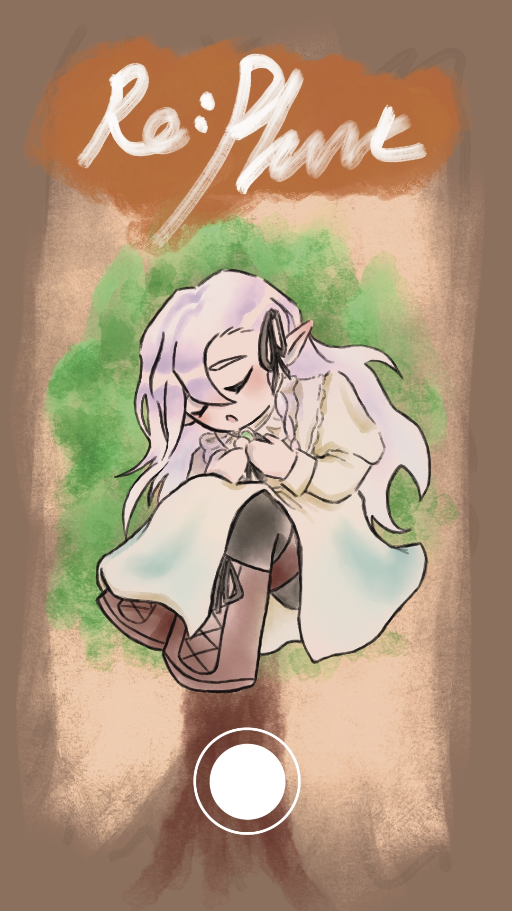
開場故事
|
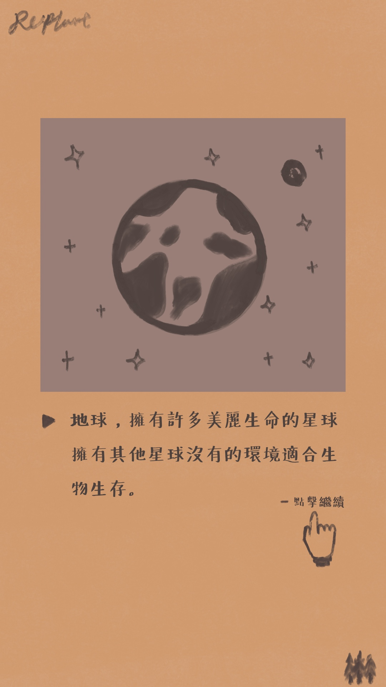 |
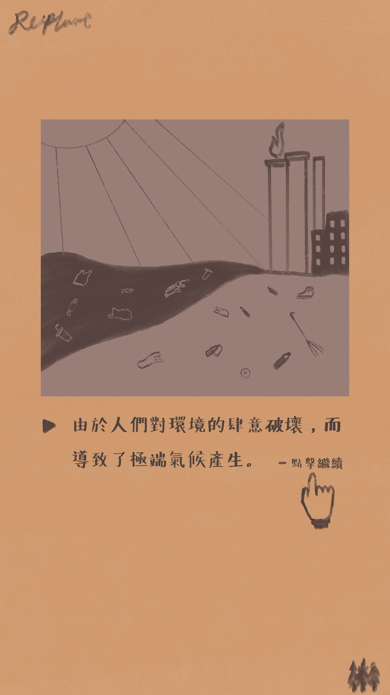 |
|
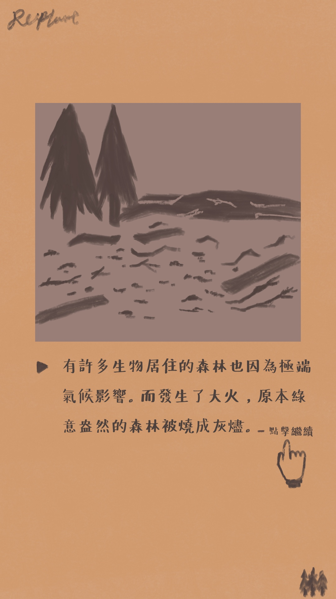 |
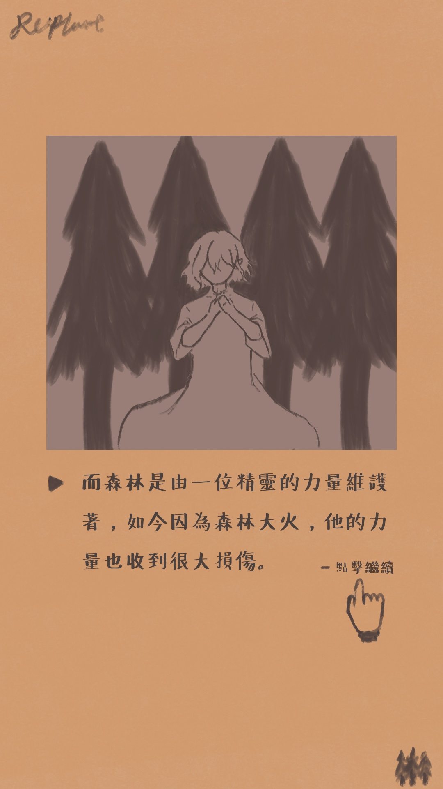 |
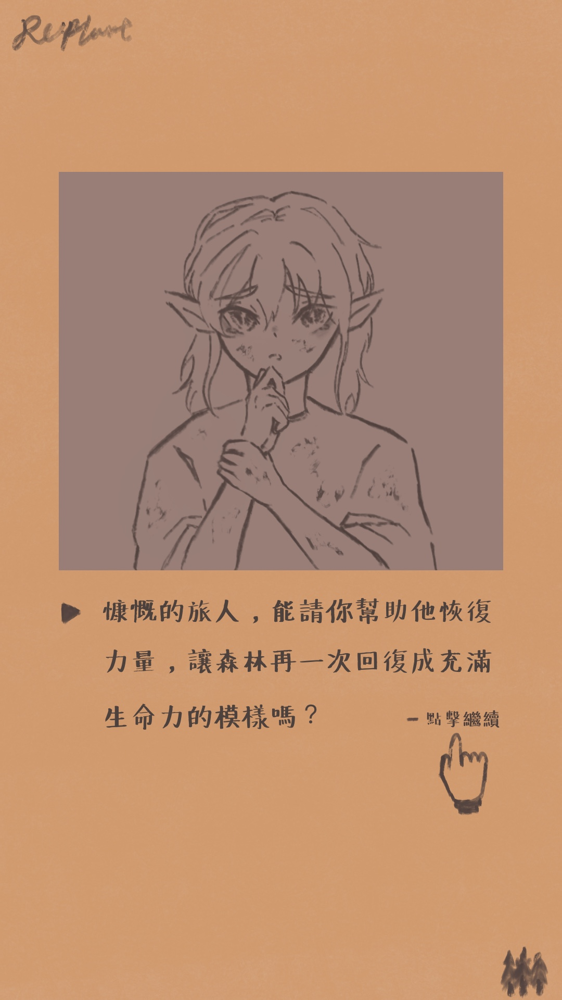 |
主頁面
|
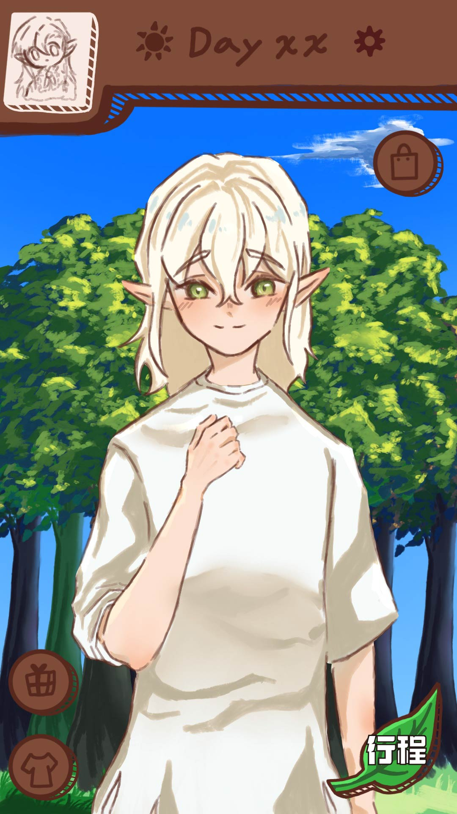 |
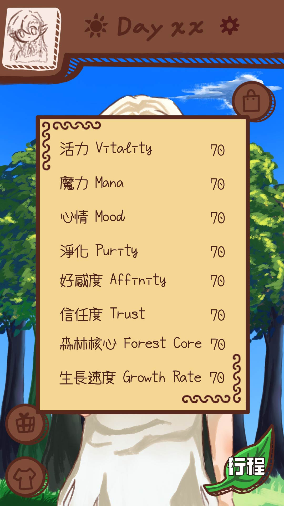 |
行程安排
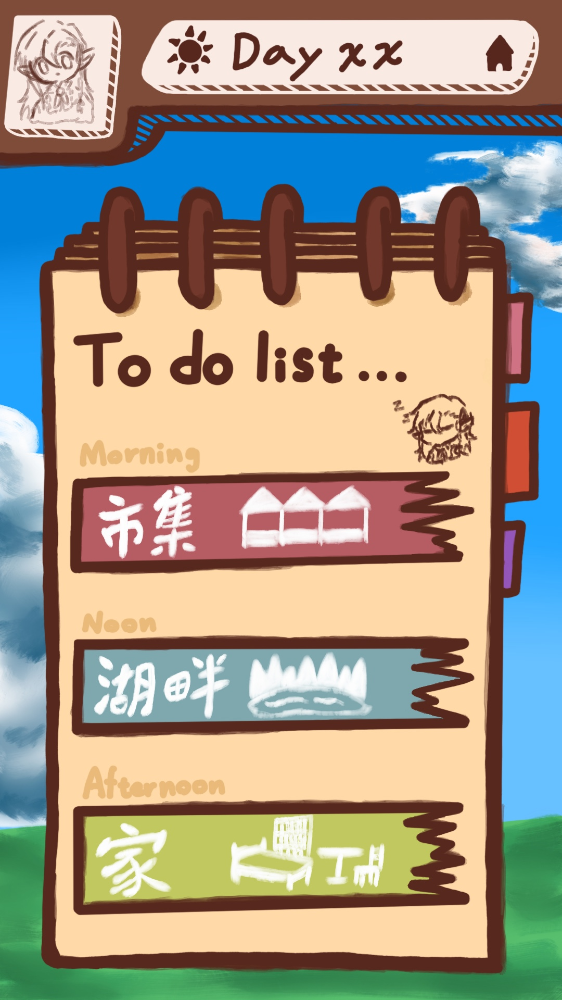
聊天介面
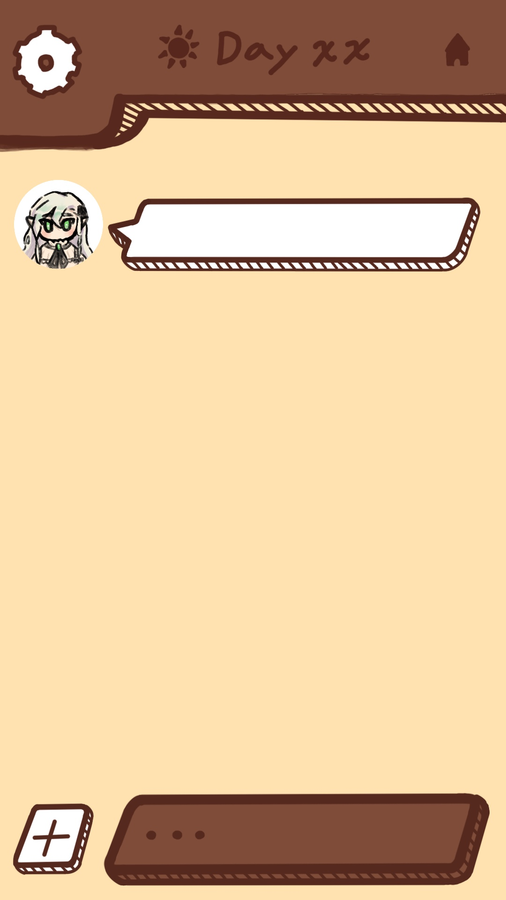
小遊戲頁面
|
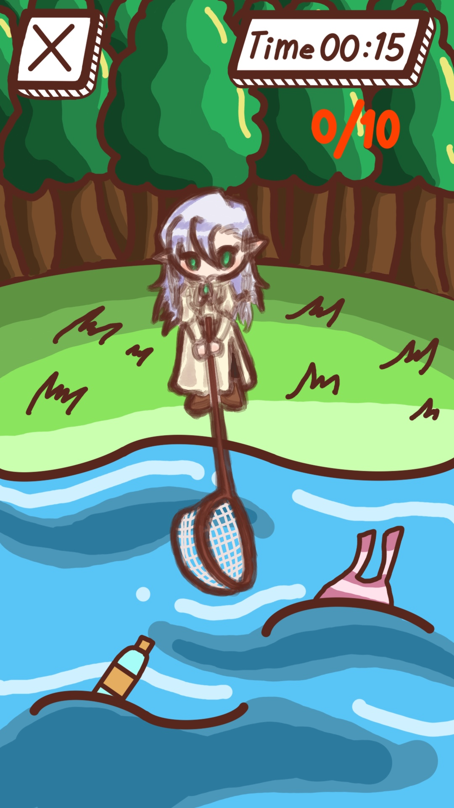 |
.JPG) |
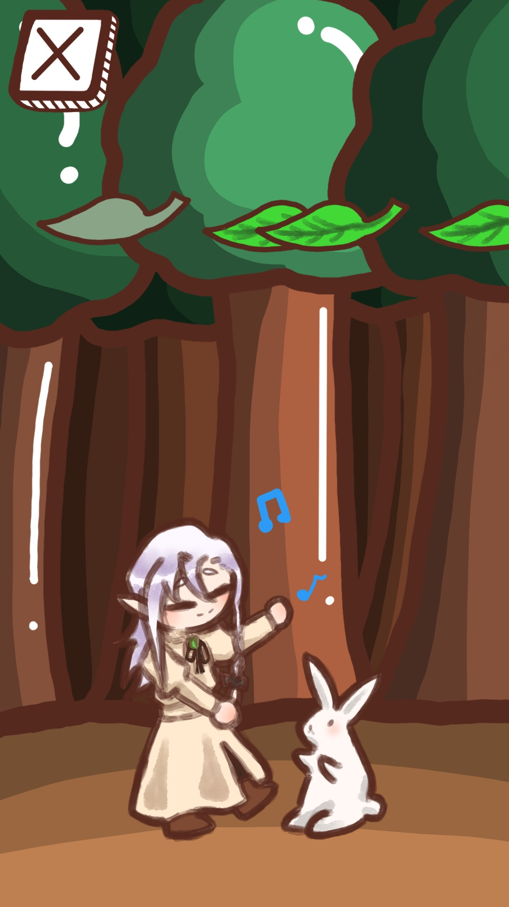 |
商店頁面-藥水鋪

商店頁面-服裝店

商店頁面-禮物店

特殊劇情CG
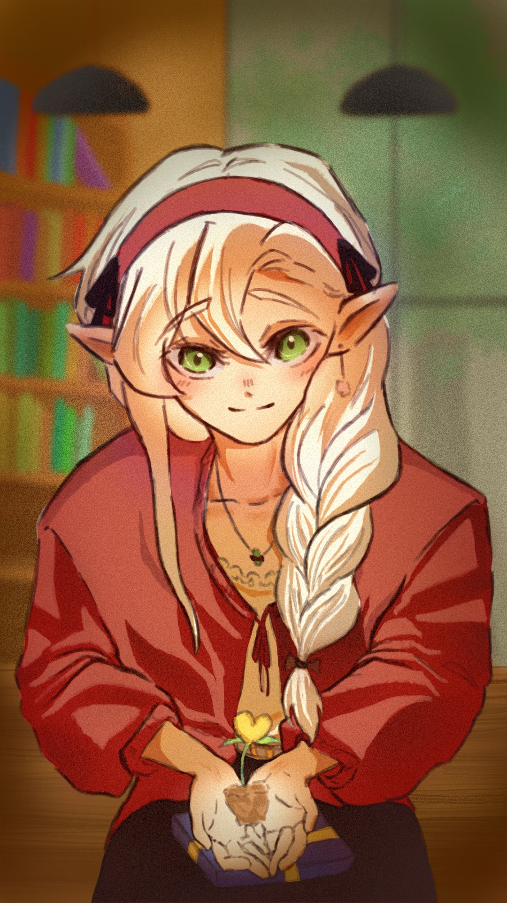
成就牆

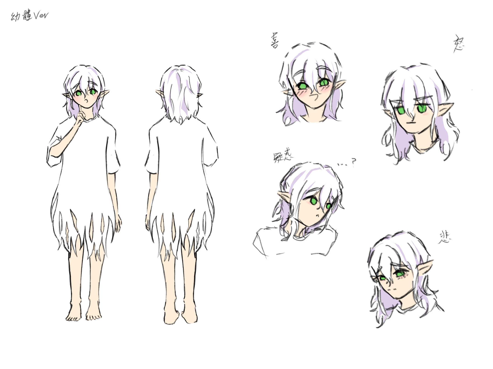
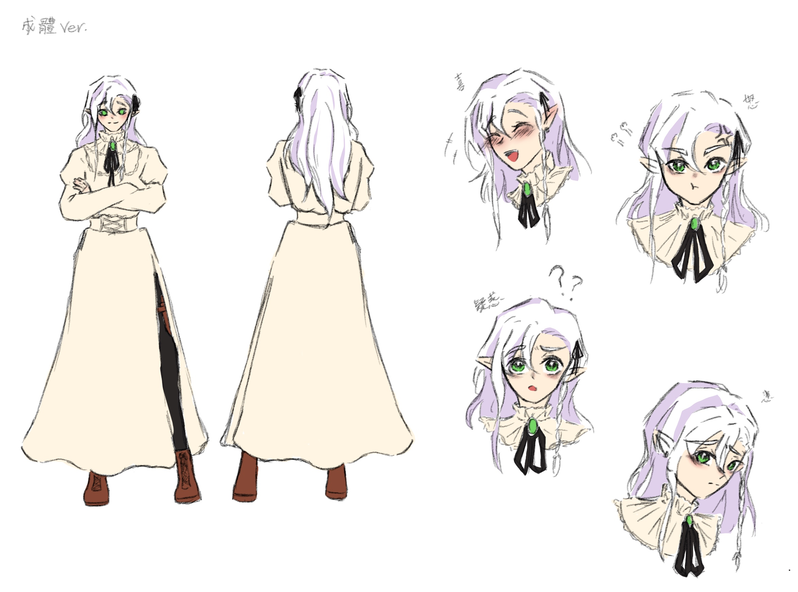
美少女夢工廠
 |
 |
戰鬥女子學園
 |
 |